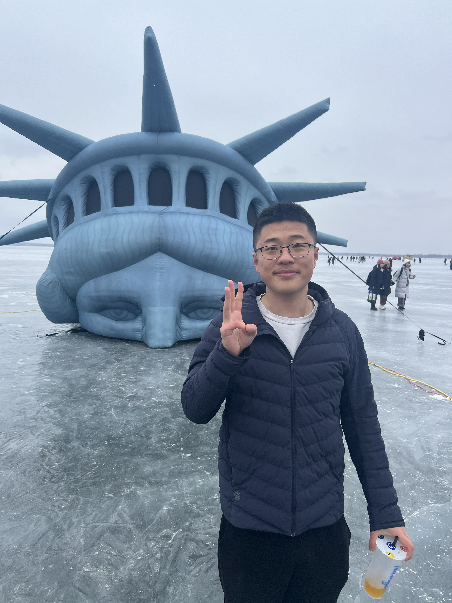

Zhifan (Oliver) Jing
Ph.D. Student
Department of Computer Sciences
University of Wisconsin–Madison
Madison, Wisconsin
E-mail: zjing24 at wisc dot edu
Bio
Hi! I am a Ph.D. student in Computer Sciences at the University of Wisconsin–Madison.
I am interested in theoretical computer science, machine learning theory, distribution testing, and high-dimensional probability.
Research Interests
My current research focuses on distribution testing when samples are independent but not identically distributed. In particular, I am interested in improving the sample complexity of closeness testing under this sampling model.
- Distribution testing and property testing
- Machine learning theory
- High-dimensional probability
- Theoretical computer science
Publications
Manuscripts will be added here.
Research Experience
University of Wisconsin–Madison
Research on distribution testing with independent but non-identically distributed samples
OPPO U.S. Research Center
AI Research Intern, Palo Alto, California
June 2024 – August 2024
Teaching
Math 541: Modern Algebra I
Grader, University of Wisconsin–Madison
Fall 2024
University Examination Proctor
University of Wisconsin–Madison
August 2024 – May 2025
Contact
E-mail: zjing24 at wisc dot edu
Department of Computer Sciences
University of Wisconsin–Madison
Madison, Wisconsin